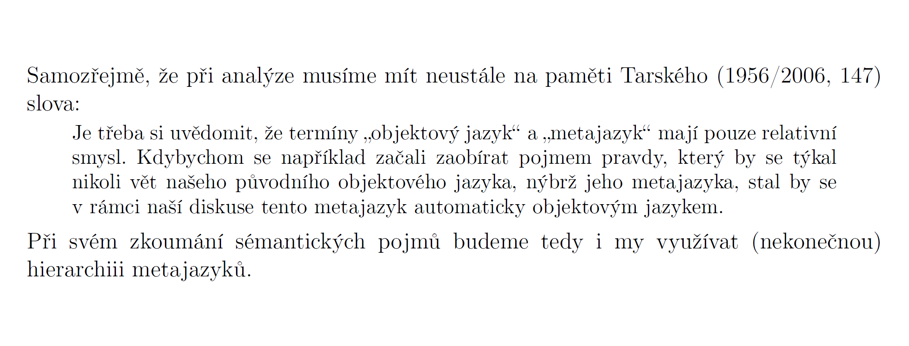

Krátké citáty
- Zabírají do 3 řádků.
- Vyznačují se pomocí uvozovek.
- V češtině je možné dvojí pořadí pro vnořování uvozovek:
- „dvojité“, ‚jednoduché‘, »dvojité boční«, ›jednoduché boční‹
- »dvojité boční«, ›jednoduché boční‹, „dvojité“, ‚jednoduché‘
- Preferovaná je první varianta.
Příklad
Jedním z předních odborníků v oblasti zkoumání paradoxu je Graham Priest, podle něhož pomocí sorites paradoxu „můžeme dokázat, že jste složeni z míchaných vajíček [překlad J. Š.]“ (2003, 9).
Dlouhé (blokové) citáty
- Zabírají přes 3 řádky textu.
- Sázejí se jako samostatný odstavec.
- Jsou sázeny písmem o jeden bod menším, než je tělo dokumentu.
- Okraje blokového citátu jsou z obou stran odsazeny o 1 cm.
- Blokový citát se neuzavírá do uvozovek, samotný odstavec je dost graficky výrazným oddělením textu.
Příklad

Kurziva
Hlavně dříve se citáty vyznačovaly nejen uvozovkami, ale zároveň se sázely kurzivou. Tento způsob vyznačování citátů je nevhodný. Převedením celého citátu do kurzivy je autor zbaven možnosti decentně zvýrazňovat jeho podstatné části a je nucen použít jako zvýraznění buď normální řez písma (což je trochu matoucí a nevýrazné) nebo tučné písmo (které by se v těle dokumentu s několika výjimkami nemělo objevit).
Zásahy do citátů
- Změny, doplnění nebo zkrácení citátu se vyznačují pomocí hranatých závorek.
- Vypuštění textu se vyznačuje třemi tečkami (výpustkou).
- Pokud zdroj obsahuje chybu můžete toto vyznačit pomocí latinského sic (lze použít i s vykřičníkem). Tím dáte najevo, že daná informace nebo daná (např. pravopisná) chyba je opravdu součástí citovaného zdroje.
- Do hranatých závorek lze uvést i vlastní poznámky, např. vysvětlení, nebo typ úpravy citátu.
Příklady
- „Karel […] utíkal do kina.“
- Vždyť nám ale říkala, že „[ch]tějí vidět geniální film The Room“.
- „Chtějí vidět geniální film The Room [kurziva J. Š.].“
- „Chtějí [studenti Prosemináře] vidět geniální film The Room.“
- „Precedens pro použití síly je Ayn Randovou často opakovaný debakl smluv s mnichova 1939 [sic!].“